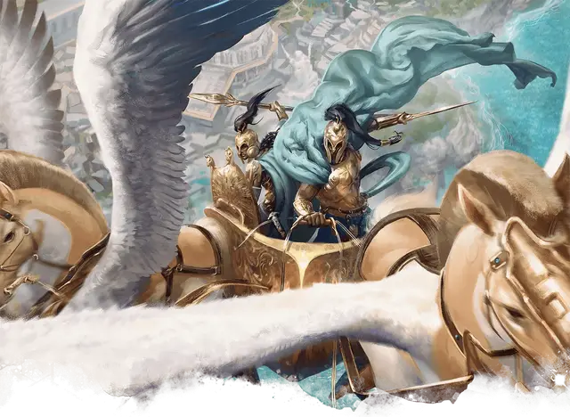

Летающая колесница
Flying Chariot
Чудесный предмет, редкий

Рекомендованная стоимость 501-5 000 зм
Всадники колесницы и существа, тянущие колесницу, получают бонус +1 к своему КД.
Если эта магическая колесница запряжена одним или несколькими летающими существами, она так же способна летать.
Колесница
Колесницы и существа, тянущие их, функционируют как контролируемый скакун, как описано в правиле «Сражения верхом» из «Книги игрока», но со следующими отличиями:
- Посадка или спешивание из колесницы требует 5 футов движения, а не половину скорости.
- Сидя в колеснице, вы получаете укрытие на половину.
- Скорость колесницы равна скорости самого медленного существа, тянущего её.
- Если колесницу тянут несколько существ, то все они действуют по одной инициативе, и они должны совершать одно и то же действие в свой ход.